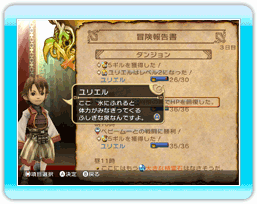

25 |
国造りのヒント |
 |
●もっと遅くまで行動したいのに、夕方になるとチャイムが迎えにきてしまう。まだ寝たくない！  幸せ度を貯めて、王国の家庭を円満にしてみましょう。家族仲が良くなると、夜も家の外に明かりをつける家が多くなり、王様は遅くまで外を歩けるようになります。
幸せ度を貯めて、王国の家庭を円満にしてみましょう。家族仲が良くなると、夜も家の外に明かりをつける家が多くなり、王様は遅くまで外を歩けるようになります。●特売日ってなに？ 冒険者のお店が、普段は売っていない商品を販売する、特別な日のことです。お店が賑わうことで「特売日」が訪れ、その日は店先が派手な看板で彩られます。 ●休日にすると何が起きるの？ 普段はダンジョンの探索を頑張ってくれる冒険者が、その日はダンジョンの探索を休み、王国内でゆっくり過ごすようになります。王国を休日にすると、やる気を失っていた冒険者も、再びやる気を出して次の日からダンジョンの探索に励んでくれるようになります。  また、王様も普段と違う服で街を歩き、国民の反応もいつもとちがってくることでしょう。 また、王様も普段と違う服で街を歩き、国民の反応もいつもとちがってくることでしょう。王国を休日にすると、その日はほかのおふれを出すことはできなくなるので注意しましょう。 ●建物をもっと建てたいのに、精霊力が足りない……。 「タカの目」のアビリティを持ったシーフにダンジョンを探索させると、通常の探索より多くの精霊石を入手することができます。 冒険者をシーフにジョブチェンジさせるには、王国内に「遊技場」が建設されている必要があります。 ●お金が足りない！ 王国の国民を増やせば、税収も増やすことができます。さらに、家庭円満だとより多くの税金を納めてくれるようになります。また、「小さな家」より「広い家」の方が、１軒あたりの税収が多くなります。 ●冒険者をもっと増やしたい！ 王国が発展すると、ギルドが建てられるようになります。ギルドに行って投資をすれば、冒険者の数を増やすことができます。 ●ダンジョンがクリアできない！ 朝の報告の「冒険報告書」には、冒険の様々な出来事が書かれています。じっくりと目を通すことで、ダンジョン攻略のヒントが分かるかもしれません。  また、ダンジョンのボスに勝てない場合は、ダンジョンの探索度を上げてから再度挑んでみましょう。ダンジョンの探索度を上げて「近道」や「回復の泉」を見つけることで、冒険者に有利な状況でボスに挑むことができるでしょう。 |
 |
 |
 |